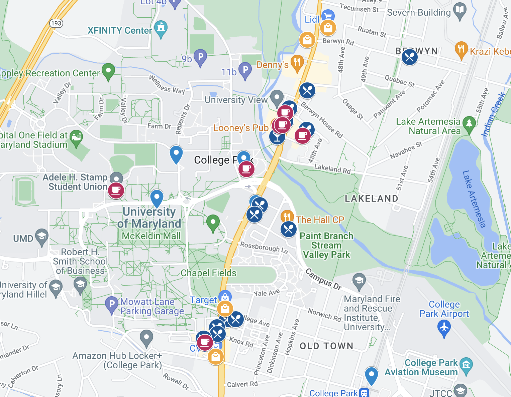
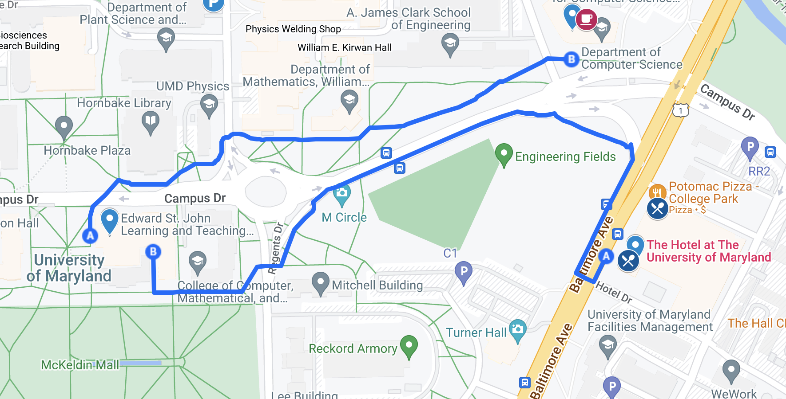

The 15th International Workshop on the Algorithmic Foundations of Robotics will be held on June 22-24, 2022 at the University of Maryland, College Park
This map has some of our favorite local coffee shops, restaurants, and other important venues in and around College Park!
Google Maps Link to Restaurants, Coffee Shops, Parking, and More!

Most of these places are only 20-30 minutes Uber or metro ride away and feature the best of DC food scene
The technical sessions will be held in Room 1224 of the Edward St. John Learning and Teaching Center at the University of Maryland, College Park. The ESJ building is a short ~8 minute walk from The Hotel.
There is construction on Campus Drive. You may find it easier to use the west (A) or the south (B) entrances to the ESJ building. 
The opening reception will be held in the lobby of the Brendan Iribe Center for Computer Science and Engineering (IRB). The IRB building is right across the street from The Hotel.
The banquet will be held at the Smithsonian Institution Building, popularly known as the "Castle" in Washington DC. Shuttles will be provided from the ESJ building and The Hotel to reach the Castle. The shuttles will also provide transportation back to The Hotel after the banquet. Participants can also choose to take an Uber/Lyft/taxi or ride on the green/yellow line of the metro to travel to the national mall.
The status of the buses can be tracked on Google Maps or Nextbus app. The payment can be made through SmartTrip or cash.
The payment can be made through SmartTrip.
There are two WiFi networks on campus that visitors can use.